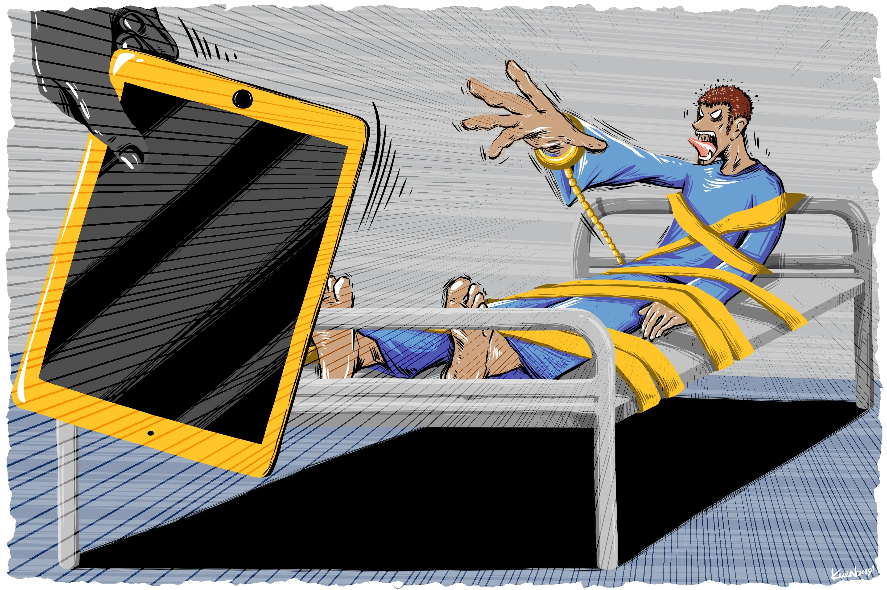

<!DOCTYPE html>
<html lang="en" dir="ltr"></html>
<head>
    <meta charset="utf-8" />
    <meta name="description" content="Netolismus" />
    <meta name="keyword" content="Netolismus, závislost na internetu, závislost, internet" />
    <meta name="author" content="MK" />
    <meta name="viewport" content="width=device-width, initial-scale=1.0">
    <link href="ikona.png" rel="icon" />
    <link href="style.css" rel="stylesheet">
    <title></title>
</head>
<body>
    <nav>
        <input type="checkbox" id="check">
        <label for="check" class="checkbtn">
          <i class="fas fa-bars"></i>
        </label>
        <label class="nadpis">Léčba a prevence</label>
        <ul>
            <li><a href="index.html">Domovská stránka</a></li>
            <li><a href="info.html">Co je to netolismus?</a></li>
            <li><a href="druhy.html">Příznaky a druhy </a></li>
            <li><a href="lecba.html">Léčba a prevence</a></li>
        </ul>
    </nav>      
    <div class = "text4">
        <a class="text4-body">
        </br>
            <h1>Léčba</h1>
            </br>
            <li>Obecně se odborníci shodují, že hlavní léčebnou metodou by měla být <font color= "yellow">psychoterapie</font>,</br>
                která může být v případě závažnějšího stavu doplněná <font color= "yellow">farmakoterapií</font>, zejména <font color= "yellow">antidepresivy</font>.</li>
            </br>
            <li><font color= "yellow">Odbornou pomoc ale vyhledává jen zlomek závislých</font>. Důvodem je pravděpodobně fakt, že velká část z nich své chování</br>
                včas reflektuje sama nebo díky svým blízkým, a omezí jej svépomocí.</li>
            </br>
            <li>Dalším vysvětlením málo častého vyhledávání léčby může být také tendence k popření závislostního chování samotnými závislými</br> nebo i to,
                že veřejnost je o tomto problému a možnostech jeho léčby málo informovaná.</li>
            </br>
            <li>Přes výše uvedené skutečnosti se vážné případy k odborníkům dostávají, o čemž svědčí zprávy o vzniku specializovaných zařízení</br> 
                 v zahraničí, zejména v USA, Koreji a Číně, které se zaměřují na léčbu tohoto rizikového chování.</li>
            </br>
            <li>Většina odborníků se shoduje na tom, že není reálné si v rámci terapeutických intervencí klást za cíl být po zbytek života offline,</br>
                protože <font color= "yellow">internet se stal neodmyslitelnou součástí života moderní společnosti</font>. Místo toho doporučují kontrolované užívání internetu.</li>
            </br> 
            <li>Cílem je tedy spíše přerušení používání problematických internetových aplikací, jako jsou online hry, pornografické stránky či chatování,</br>
                a zároveň pokračování v používání méně ohrožujících aplikací, které jsou potřebné pro běžné fungování (například emailová pošta nebo vyhledávání informací).
            </li>
        </a>
    </div>
    
    <div class = "text5">
        <a class="text5-body">
        </br>
        <h1>Prevence</h1>
        </br>
        <li><strong>Sledujte, jaké hry děti hrají</strong>
        <li><strong>Uvědomte si, že hry mají i kladné stránky:</strong> Některé umožňují rozvíjet logiku, postřeh, schopnost orientace ve složité situaci,</br> 
            koordinaci očí a rukou, koncentraci, plánování, řešení problémů a další schopnosti. Důležitý je výběr her a přiměřenost času jim věnovaného
        <li><strong>Hrajte hry spolu s dítětem a potom si o nich povídejte:</strong> Pomáháte tak rozlišovat fikci od reality
        <li><strong>Stanovte striktní limity, kdy dítě může hrát a kdy ne</strong>
        <li><strong>Dávejte pozor, aby dítě nehrálo hry u kamarádů</strong>
        <li><strong>Zjistěte, zda dítě hraním počítačových her neutíká od nějakých problémů</strong>    
        <li><strong>Předcházejte tomu, aby se dítě nudilo</strong>
        <li><strong>Posilujte zdravé sebevědomí dítěte</strong>
        <li><strong>Podporujte dítě v jiných zájmech</strong>
        </a>
    </div>
<div class = "footer">
    <a class="footer-body">
    </br>
        <li>Martin Kroczek</li>
        <li>2023</li>
    </a>
</div>
</body>
</html>